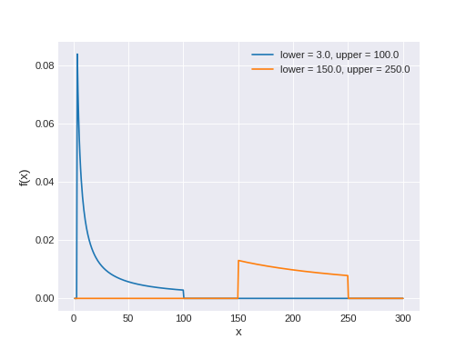

API Documentation¶
superphot.classify module¶
-
class
superphot.classify.MultivariateGaussian(sampling_strategy='all', random_state=None)[source]¶ Bases:
imblearn.over_sampling.base.BaseOverSamplerClass to perform over-sampling using a multivariate Gaussian (
numpy.random.multivariate_normal).- Parameters
- sampling_strategyfloat, str, dict, callable or int, default=’auto’
Sampling information to resample the data set.
When
float, it corresponds to the desired ratio of the number of samples in the minority class over the number of samples in the majority class after resampling. Therefore, the ratio is expressed as \(\alpha_{os} = N_{rm} / N_{M}\) where \(N_{rm}\) is the number of samples in the minority class after resampling and \(N_{M}\) is the number of samples in the majority class.Warning
floatis only available for binary classification. An error is raised for multi-class classification.When
str, specify the class targeted by the resampling. The number of samples in the different classes will be equalized. Possible choices are:'minority': resample only the minority class;'not minority': resample all classes but the minority class;'not majority': resample all classes but the majority class;'all': resample all classes;'auto': equivalent to'not majority'.When
dict, the keys correspond to the targeted classes. The values correspond to the desired number of samples for each targeted class.When callable, function taking
yand returns adict. The keys correspond to the targeted classes. The values correspond to the desired number of samples for each class.When
int, it corresponds to the total number of samples in each class (including the real samples). Can be used to oversample even the majority class. Ifsampling_strategyis smaller than the existing size of a class, that class will not be oversampled and the classes may not be balanced.
- random_stateint, RandomState instance, default=None
Control the randomization of the algorithm.
If int,
random_stateis the seed used by the random number generator;If
RandomStateinstance, random_state is the random number generator;If
None, the random number generator is theRandomStateinstance used bynp.random.
-
superphot.classify.aggregate_probabilities(table)[source]¶ Average the classification probabilities for a given supernova across the multiple model light curves.
- Parameters
- tableastropy.table.Table
Astropy table containing the metadata for a supernova and the classification probabilities from clf.predict_proba (column name = ‘probabilities’)
- Returns
- resultsastropy.table.Table
Astropy table containing the supernova metadata and average classification probabilities for each supernova
-
superphot.classify.fit_predict(pipeline, train_data, test_data)[source]¶ Train a classification pipeline on train_data and use it to classify test_data.
- Parameters
- pipelineimblearn.pipeline.Pipeline
The full classification pipeline, including rescaling, resampling, and classification.
- train_dataastropy.table.Table
Astropy table containing the training data. Must have a ‘features’ column and a ‘type’ column.
- test_dataastropy.table.Table
Astropy table containing the test data. Must have a ‘features’ column.
- Returns
- p_classnumpy.array
Classification probabilities for each of the supernovae in test_features.
-
superphot.classify.load_data(meta_file, data_file=None)[source]¶ Read input from a text file (the metadata table) and a Numpy file (the features) and return as an Astropy table.
- Parameters
- meta_filestr
Filename of the input metadata table. Must in an ASCII format readable by Astropy.
- data_filestr, optional
Filename where the features are saved. Must be in Numpy binary format. If None, replace the extension of meta_file with .npz.
- Returns
- data_tableastropy.table.Table
Table containing the metadata along with a ‘features’ column.
-
superphot.classify.make_confusion_matrix(results, classes=None, p_min=0.0, saveto=None, purity=False)[source]¶ Given a data table with classification probabilities, calculate and plot the confusion matrix.
- Parameters
- resultsastropy.table.Table
Astropy table containing the supernova metadata and classification probabilities (column name = ‘probabilities’)
- classesarray-like, optional
Labels corresponding to the ‘probabilities’ column. If None, use the sorted entries in the ‘type’ column.
- p_minfloat, optional
Minimum confidence to be included in the confusion matrix. Default: include all samples.
- savetostr, optional
Save the plot to this filename. If None, the plot is displayed and not saved.
- puritybool, optional
If False (default), aggregate by row (true label). If True, aggregate by column (predicted label).
-
superphot.classify.mean_axis0(x, axis=0)[source]¶ Equivalent to the numpy.mean function but with axis=0 by default.
-
superphot.classify.plot_confusion_matrix(confusion_matrix, classes, ndraws=0, cmap='Blues', purity=False, title=None, xlabel='Photometric Classification', ylabel='Spectroscopic Classification', ax=None)[source]¶ Plot a confusion matrix with each cell labeled by its fraction and absolute number.
Based on tutorial: https://scikit-learn.org/stable/auto_examples/model_selection/plot_confusion_matrix.html
- Parameters
- confusion_matrixarray-like
The confusion matrix as a square array of integers.
- classeslist
List of class labels for the axes of the confusion matrix.
- ndrawsint, optional
If ndraws > 0, divide each cell in the matrix by ndraws before plotting and note this in the title.
- cmapstr, optional
Name of a Matplotlib colormap to color the matrix.
- puritybool, optional
If False (default), aggregate by row (true label). If True, aggregate by column (predicted label).
- titlestr, optional
Text to go above the plot. Default: “Confusion Matrix (N = confusion_matrix.sum())”.
- xlabel, ylabelstr, optional
Labels for the x- and y-axes. Default: “True Label” and “Predicted Label”.
- axmatplotlib.pyplot.axes, optional
Axis on which to plot the confusion matrix. Default: new axis.
-
superphot.classify.plot_feature_importance(pipeline, train_data, width=0.8, nsamples=1000, saveto=None)[source]¶ Plot a bar chart of feature importance using mean decrease in impurity, with permutation importances overplotted.
- Parameters
- pipelinesklearn.pipeline.Pipeline or imblearn.pipeline.Pipeline
The trained pipeline for which to plot feature importances. Steps should be named ‘classifier’ and ‘sampler’.
- train_dataastropy.table.Table
Data table containing ‘features’ and ‘type’ for training when calculating permutation importances. Must also include ‘featnames’ and ‘filters’ in train_data.meta.
- widthfloat, optional
Total width of the bars in units of the separation between bars. Default: 0.8.
- nsamplesint, optional
Number of samples to draw for the fake validation data set. Default: 1000.
- savetostr, optional
Filename to which to save the plot. Default: show instead of saving.
-
superphot.classify.validate_classifier(pipeline, train_data, test_data=None)[source]¶ Validate the performance of a machine-learning classifier using leave-one-out cross-validation.
- Parameters
- pipelineimblearn.pipeline.Pipeline
The full classification pipeline, including rescaling, resampling, and classification.
- train_dataastropy.table.Table
Astropy table containing the training data. Must have a ‘features’ column and a ‘type’ column.
- test_dataastropy.table.Table, optional
Astropy table containing the test data. Must have a ‘features’ column to which to apply the trained classifier. If None, use the training data itself for validation.
- Returns
- p_classnumpy.array
Classification probabilities for each of the supernovae in test_features.
-
superphot.classify.write_results(test_data, classes, filename)[source]¶ Write the classification results to a text file.
- Parameters
- test_dataastropy.table.Table
Astropy table containing the supernova metadata and the classification probabilities for each sample from clf.predict_proba (column name = ‘probabilities’).
- classeslist
The labels that correspond to the columns in ‘probabilities’
- filenamestr
Name of the output file
superphot.extract module¶
-
superphot.extract.extract_features(t, stored_models, filters, R_filters=None, ndraws=10, zero_point=27.5, use_pca=True, stored_pcas=None, save_pca_to=None, save_reconstruction_to=None, random_state=None)[source]¶ Extract features for a table of model light curves: the peak absolute magnitudes and principal components of the light curves in each filter.
- Parameters
- tastropy.table.Table
Table containing the ‘filename’ and ‘redshift’ of each transient to be classified.
- stored_modelsstr
If a directory, look in this directory for PyMC3 trace data and sample the posterior to produce model LCs. If a Numpy file, read the parameters from this file.
- filtersiterable
Filters for which to extract features. If stored_models is a directory, these should be the last characters of the subdirectories in which the traces are stored. Ignored if models are read from a Numpy file.
- R_filtersdict, optional
Ratios of total to selective extinction for filters. This package includes the values for common filters (see superphot.extract.R_FILTERS). Use this argument to override those default values or to include additional filters.
- ndrawsint, optional
Number of random draws from the MCMC posterior. Default: 10. Ignored if models are read from a Numpy file.
- zero_pointfloat, optional
Zero point to be used for calculating the peak absolute magnitudes. Default: 27.5 mag.
- use_pcabool, optional
Use the peak absolute magnitudes and principal components of the light curve as the features (default). Otherwise, use the model parameters directly.
- stored_pcasstr, optional
Path to pickled PCA objects. Default: create and fit new PCA objects.
- save_pca_tostr, optional
Plot and save the principal components to this file. Default: skip this step.
- save_reconstruction_tostr, optional
Plot and save the reconstructed light curves to this file (slow). Default: skip this step.
- random_stateint, optional
Seed for the random number generator, which is used to sample the posterior. Use for reproducibility.
- Returns
- t_goodastropy.table.Table
Slice of the input table with a ‘features’ column added. Rows with any bad features are excluded.
-
superphot.extract.flux_to_luminosity(row, R_filter)[source]¶ Return the flux-to-luminosity conversion factor for the transient in a given row of a data table.
- Parameters
- rowastropy.table.row.Row
Astropy table row for a given transient, containing columns ‘MWEBV’ and ‘redshift’.
- R_filterlist
Ratios of A_filter to row[‘MWEBV’] for each of the filters used. This determines the length of the output.
- Returns
- flux2lumnumpy.ndarray
Array of flux-to-luminosity conversion factors for each filter.
-
superphot.extract.get_principal_components(light_curves, light_curves_fit=None, n_components=6, whiten=True, stored_pcas=None)[source]¶ Run a principal component analysis on a list of light curves and return a list of their principal components.
- Parameters
- light_curvesarray-like
A list of evenly-sampled model light curves.
- light_curves_fitarray-like, optional
A list of model light curves to be used for fitting the PCA. Default: fit and transform the same light curves.
- n_componentsint, optional
The number of principal components to calculate. Default: 6.
- whitenbool, optional
Whiten the input data before calculating the principal components. Default: True.
- stored_pcasstr, optional
Path to pickled PCA objects. Default: create and fit new PCA objects.
- Returns
- principal_componentsarray-like
A list of the principal components for each of the input light curves.
-
superphot.extract.load_trace(tracefile, filters)[source]¶ Read the stored PyMC3 traces into a 3-D array with shape (nsteps, nfilters, nparams).
- Parameters
- tracefilestr
Directory where the traces are stored. Should contain an asterisk (*) to be replaced by elements of filters.
- filtersiterable
Filters for which to load traces. If one or more filters are not found, the posteriors of the remaining filters will be combined and used in place of the missing ones.
- Returns
- trace_valuesnumpy.array
PyMC3 trace stored as 3-D array with shape (nsteps, nfilters, nparams).
-
superphot.extract.plot_feature_correlation(data_table, saveto=None)[source]¶ Plot a matrix of the Spearman rank correlation coefficients between each pair of features.
- Parameters
- data_tableastropy.table.Table
Astropy table containing a ‘features’ column. Must also have ‘featnames’ and ‘filters’ in data_table.meta.
- savetostr, optional
Filename to which to save the plot. Default: show instead of saving.
-
superphot.extract.plot_pca_reconstruction(models, reconstructed, coefficients=None, filters=None, saveto='pca_reconstruction.pdf')[source]¶ Plot comparisons between the model light curves and the light curves reconstructed from the PCA for each transient. These are saved as a multipage PDF.
- Parameters
- modelsarray-like
A 3-D array of model light curves with shape (ntransients, nfilters, ntimes)
- reconstructedarray-like
A 3-D array of reconstructed light curves with shape (ntransients, nfilters, ntimes)
- coefficientsarray-like, optional
A 3-D array of the principal component coefficients with shape (ntransients, nfilters, ncomponents). If given, the coefficients will be printed at the top right of each plot.
- filtersiterable, optional
Names of the filters corresponding to the PCA objects. Only used for coloring the lines.
- savetostr, optional
Filename for the output file. Default: pca_reconstruction.pdf.
-
superphot.extract.plot_principal_components(pcas, time=None, filters=None, saveto='principal_components.pdf')[source]¶ Plot the principal components being used to extract features from the model light curves.
- Parameters
- pcaslist
List of the PCA objects for each filter, after fitting.
- timearray-like, optional
Times (x-values) to plot the principal components against.
- filtersiterable, optional
Names of the filters corresponding to the PCA objects. Only used for coloring and labeling the lines.
- savetostr, optional
Filename to which to save the plot. Default: principal_components.pdf.
-
superphot.extract.select_good_events(t, data)[source]¶ Select only events with finite data for all draws. Returns the table and data for only these events.
- Parameters
- tastropy.table.Table
Original data table. Must have t.meta[‘ndraws’] to indicate now many draws it contains for each event.
- dataarray-like, shape=(nfilt, len(t), …)
Numpy array containing the data upon which finiteness will be judged.
- Returns
- t_goodastropy.table.Table
Data table containing only the good events.
- good_dataarray-like
Numpy array containing only the data for good events.
superphot.fit module¶
-
class
superphot.fit.LogUniform(lower=1.0, upper=2.718281828459045, *args, **kwargs)[source]¶ Bases:
pymc3.distributions.continuous.BoundedContinuousContinuous log-uniform log-likelihood.
The pdf of this distribution is
\[f(x \mid lower, upper) = \frac{1}{[\log(upper)-\log(lower)]x}\]Support
\(x \in [lower, upper]\)
Mean
\(\dfrac{upper - lower}{\log(upper) - \log(lower)}\)
- Parameters
- lowerfloat
Lower limit.
- upperfloat
Upper limit.
-
logp(self, value)[source]¶ Calculate log-probability of LogUniform distribution at specified value.
- Parameters
- valuenumeric
Value for which log-probability is calculated.
- Returns
- TensorVariable
-
random(self, point=None, size=None)[source]¶ Draw random values from LogUniform distribution.
- Parameters
- pointdict, optional
Dict of variable values on which random values are to be conditioned (uses default point if not specified).
- sizeint, optional
Desired size of random sample (returns one sample if not specified).
- Returns
- array
-
superphot.fit.cut_outliers(t, nsigma)[source]¶ Make an Astropy table containing only data that is below the cut off threshold.
- Parameters
- tastropy.table.Table
Astropy table containing the light curve data.
- nsigmafloat
Determines at what value (flux < nsigma * mad_std) to cut outlier data points.
- Returns
- t_cutastropy.table.Table
Astropy table containing only data that is below the cut off threshold.
-
superphot.fit.diagnostics(obs, trace, parameters, filename='.', show=False)[source]¶ Make some diagnostic plots for the PyMC3 fitting.
- Parameters
- obsastropy.table.Table
Observed light curve data in a single filter.
- tracepymc3.MultiTrace
Trace object that is the result of the PyMC3 fit.
- parameterslist
List of Theano variables in the PyMC3 model.
- filenamestr, optional
Directory in which to save the output plots and summary. Not used if show=True.
- showbool, optional
If True, show the plots instead of saving them.
-
superphot.fit.flux_model(t, A, beta, gamma, t_0, tau_rise, tau_fall)[source]¶ Calculate the flux given amplitude, plateau slope, plateau duration, start time, rise time, and fall time using theano.switch. Parameters.type = TensorType(float64, scalar).
- Parameters
- t1-D numpy array
Time.
- ATensorVariable
Amplitude of the light curve.
- betaTensorVariable
Light curve slope during the plateau, normalized by the amplitude.
- gammaTensorVariable
The duration of the plateau after the light curve peaks.
- t_0TransformedRV
Start time, which is very close to when the actual light curve peak flux occurs.
- tau_riseTensorVariable
Exponential rise time to peak.
- tau_fallTensorVariable
Exponential decay time after the plateau ends.
- Returns
- flux_modelsymbolic Tensor
The predicted flux from the given model.
-
superphot.fit.make_new_priors(traces, parameters, res=100)[source]¶ For each parameter, combine the posteriors for the four filters and use that as the new prior.
- Parameters
- tracesdict
Dictionary of MultiTrace objects for each filter.
- parameterslist
List of Theano variables for which to combine the posteriors. (Only names of the parameters are used.)
- resint, optional
Number of points to sample the KDE for the new priors.
- Returns
- x_priorslist
List of Numpy arrays containing the x-values of the new priors.
- y_priorslist
List of Numpy arrays containing the y-values of the new priors.
- old_posteriorslist
List of dictionaries containing the y-values of the old posteriors for each filter.
-
superphot.fit.plot_final_fits(t, traces1, traces2, parameters, outfile=None)[source]¶ Make a four-panel plot showing sample light curves from each of the two fitting iterations compared to observations.
- Parameters
- tastropy.table.Table
Astropy table containing the observed light curve.
- traces1, traces2dict
Dictionaries of the trace objects (for each filter) from which to generate the model light curves.
- parameterslist
List of Theano variables in the PyMC3 model.
- outfilestr, optional
Filename to which to save the plot. If None, display the plot instead of saving it.
- Returns
- figmatplotlib.figure.Figure
Figure object for the plot (can be added to a multipage PDF).
-
superphot.fit.plot_model_lcs(obs, trace, parameters, size=100, ax=None, fltr=None, ls=None, phase_min=- 50.0, phase_max=180.0)[source]¶ Plot sample light curves from a fit compared to the observations.
- Parameters
- obsastropy.table.Table
Astropy table containing the observed light curve in a single filter.
- tracepymc3.MultiTrace
PyMC3 trace object containing values for the fit parameters.
- parameterslist
List of Theano variables in the PyMC3 model.
- sizeint, optional
Number of draws from the posterior to plot. Default: 100.
- axmatplotlib.axes.Axes, optional
Axes object on which to plot the light curves. If None, create new Axes.
- fltrstr, optional
Filter these data were observed in. Only used to label and color the plot.
- lsstr, optional
Line style for the model light curves. Default: solid line.
- phase_min, phase_maxfloat, optional
Time range over which to plot the light curves.
-
superphot.fit.plot_priors(x_priors, y_priors, old_posteriors, parameters, saveto=None)[source]¶ Overplot the old priors, the old posteriors in each filter, and the new priors for each parameter.
- Parameters
- x_priorslist
List of Numpy arrays containing the x-values of the new priors.
- y_priorslist
List of Numpy arrays containing the y-values of the new priors.
- old_posteriorslist
List of dictionaries containing the y-values of the old posteriors for each filter.
- parameterslist
List of Theano variables for which to combine the posteriors.
- savetostr, optional
Filename to which to save the plot. If None, display the plot instead of saving it.
-
superphot.fit.produce_lc(time, trace, align_to_t0=False)[source]¶ Load the stored PyMC3 traces and produce model light curves from the parameters.
- Parameters
- timenumpy.array
Range of times (in days, with respect to PEAKMJD) over which the model should be calculated.
- tracenumpy.array
PyMC3 trace stored as an array, with parameters as the last dimension.
- align_to_t0bool, optional
Interpret time as days with respect to t_0 instead of PEAKMJD.
- Returns
- lcnumpy.array
Model light curves. Time is the last dimension.
-
superphot.fit.read_light_curve(filename)[source]¶ Read light curve data from a text file as an Astropy table. SNANA files are recognized.
- Parameters
- filenamestr
Path to light curve data file.
- Returns
- tastropy.table.Table
Table of light curve data.
-
superphot.fit.sample_or_load_trace(model, trace_file, force=False, iterations=10000, walkers=25, tuning=25000)[source]¶ Run a Metropolis Hastings MCMC for the given model with a certain number iterations, burn in (tuning), and walkers.
If the MCMC has already been run, read and return the existing trace (unless force=True).
- Parameters
- modelpymc3.Model
PyMC3 model object for the input data.
- trace_filestr
Path where the trace will be stored. If this path exists, load the trace from there instead.
- forcebool, optional
Resample the model even if trace_file already exists.
- iterationsint, optional
The number of iterations after tuning.
- walkersint, optional
The number of cores and walkers used.
- tuningint, optional
The number of iterations used for tuning.
- Returns
- tracepymc3.MultiTrace
The PyMC3 trace object for the MCMC run.
-
superphot.fit.select_event_data(t, phase_min=- 50.0, phase_max=180.0, nsigma=None)[source]¶ Select data only from the period containing the peak flux, with outliers cut.
- Parameters
- tastropy.table.Table
Astropy table containing the light curve data.
- phase_min, phase_maxfloat, optional
Include only points within [phase_min, phase_max) days of SEARCH_PEAKMJD.
- nsigmafloat, optional
Determines at what value (flux < nsigma * mad_std) to reject outlier data points. Default: no rejection.
- Returns
- t_eventastropy.table.Table
Table containing the reduced light curve data from the period containing the peak flux.
-
superphot.fit.setup_model1(obs, max_flux=None)[source]¶ Set up the PyMC3 model object, which contains the priors and the likelihood.
- Parameters
- obsastropy.table.Table
Astropy table containing the light curve data.
- max_fluxfloat, optional
The maximum flux observed in any filter. The amplitude prior is 100 * max_flux. If None, the maximum flux in the input table is used, even though it does not contain all the filters.
- Returns
- modelpymc3.Model
PyMC3 model object for the input data. Use this to run the MCMC.
-
superphot.fit.setup_model2(obs, parameters, x_priors, y_priors)[source]¶ Set up a PyMC3 model for observations in a given filter using the given priors and parameter names.
- Parameters
- obsastropy.table.Table
Astropy table containing the light curve data.
- parameterslist
List of Theano variables for which to create new parameters. (Only names of the parameters are used.)
- x_priorslist
List of Numpy arrays containing the x-values of the priors.
- y_priorslist
List of Numpy arrays containing the y-values of the priors.
- Returns
- modelpymc3.Model
PyMC3 model object for the input data. Use this to run the MCMC.
-
superphot.fit.two_iteration_mcmc(light_curve, outfile, filters=None, force=False, force_second=False, do_diagnostics=True, iterations=10000, walkers=25, tuning=25000)[source]¶ Fit the model to the observed light curve. Then combine the posteriors for each filter and use that as the new prior for a second iteration of fitting.
- Parameters
- light_curveastropy.table.Table
Astropy table containing the observed light curve.
- outfilestr
Path where the trace will be stored. This should include a blank field ({{}}) that will be replaced with the iteration number and filter name. Diagnostic plots will also be saved according to this pattern.
- filtersstr, optional
Light curve filters to fit. Default: all filters in light_curve.
- forcebool, optional
Redo the fit (both iterations) even if results are already stored in outfile. Default: False.
- force_secondbool, optional
Redo only the second iteration of the fit, even if the results are already stored in outfile. Default: False.
- do_diagnosticsbool, optional
Produce and save some diagnostic plots. Default: True.
- iterationsint, optional
The number of iterations after tuning.
- walkersint, optional
The number of cores and walkers used.
- tuningint, optional
The number of iterations used for tuning.
- Returns
- traces1, traces2dict
Dictionaries of the PyMC3 trace objects for each filter for the first and second fitting iterations.
- parameterslist
List of Theano variables in the PyMC3 model.
superphot.optimize module¶
-
superphot.optimize.plot_hyperparameters_3d(t, ccols, xcol, ycol, zcol, cmap=None, cmin=None, cmax=None)[source]¶ Plot 3D scatter plots of the metrics against the hyperparameters.
- Parameters
- tastropy.table.Table
Table of results from test_hyperparameters.
- ccolslist
List of columns to plot as metrics.
- xcol, ycol, zcolstr
Columns to plot on the x-, y-, and z-axes of the scatter plots.
- cmapstr, optional
Name of the colormap to use to color the values in ccols.
- cmin, cmaxfloat, optional
Data limits corresponding to the minimum and maximum colors in cmap.
-
superphot.optimize.plot_hyperparameters_with_diff(t, dcol, xcol, ycol, zcol, saveto=None)[source]¶ Plot the metrics for one value of dcol and the difference in the metrics for the second value of dcol.
- Parameters
- tastropy.table.Table
Table of results from test_hyperparameters.
- dcolstr
Column to plot as a difference.
- xcol, ycol, zcolstr
Columns to plot on the x-, y-, and z-axes of the scatter plots.
- savetostr, optional
Save the plot to this filename. If None, the plot is displayed and not saved.
-
superphot.optimize.test_hyperparameters(param_set, pipeline, train_data, test_data)[source]¶ Validates the pipeline for a set of hyperparameters.
Measures F1 score and accuracy, as well as completeness and purity for each class.
- Parameters
- param_setdict
A dictionary containing keywords that match the parameters of pipeline and values to which to set them.
- pipelinesklearn.pipeline.Pipeline or imblearn.pipeline.Pipeline
The full classification pipeline, including rescaling, resampling, and classification.
- train_dataastropy.table.Table
Astropy table containing the training data. Must have a ‘features’ column and a ‘type’ column.
- test_dataastropy.table.Table
Astropy table containing the test data. Must have a ‘features’ column.
superphot.util module¶
-
superphot.util.plot_histograms(data_table, colname, class_kwd='type', varnames=(), rownames=(), no_autoscale=(), saveto=None)[source]¶ Plot a grid of histograms of the column colname of data_table, grouped by the column groupby.
- Parameters
- data_tableastropy.table.Table
Data table containing the columns colname and groupby for each supernova.
- colnamestr
Column name of data_table to plot (e.g., ‘params’ or ‘features’).
- class_kwdstr, optional
Column name of data_table to group by before plotting (e.g., ‘type’ or ‘prediction’). Default: ‘type’.
- varnamesiterable, optional
Parameter names to list on the x-axes of the plot. Default: no labels.
- rownamesiterable, optional
Labels for the leftmost y-axes.
- no_autoscaletuple or list, optional
Class names not to use in calculating the axis limits. Default: include all.
- savetostr, optional
Filename to which to save the plot. Default: display the plot instead of saving it.